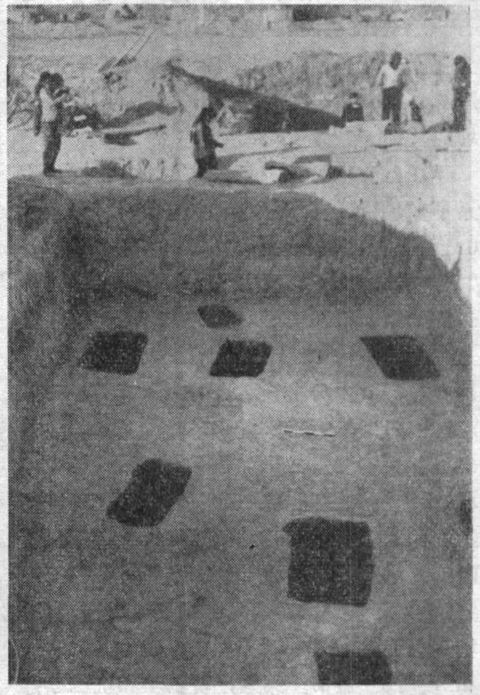
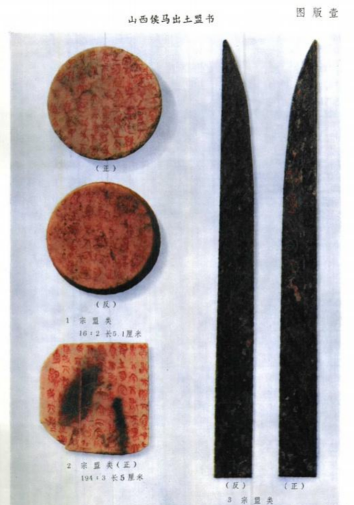
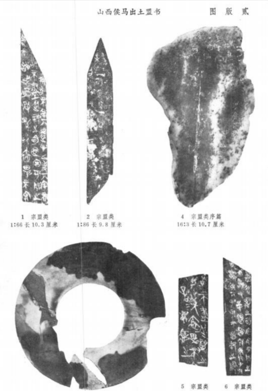
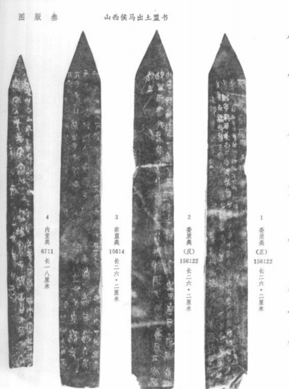
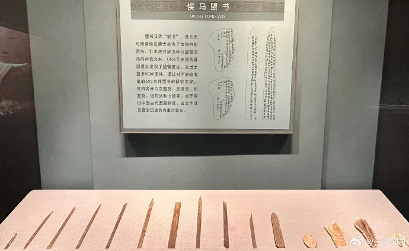

侯马盟书，是春秋晚期晋国卿大夫举行盟誓活动的记录，因出土于山西省侯马市而得名。它是中国目前发现最早的、用毛笔书写的完整玉石档案，也是山西地域文化中最具标志性的考古发现之一。
这批盟书以玉石片为载体，用朱红色颜料书写盟誓辞文，真实再现了春秋时期诸侯国之间复杂的政治博弈与宗族同盟，是研究晋国历史及先秦盟誓制度的第一手原始档案。

1965年至1966年，山西省文物管理委员会在侯马市晋国遗址进行考古发掘。在配合电厂工程建设时，于一片祭祀坑中发现了大量带有朱红色文字的玉石片，总数超过5000件，其中可辨识文字者约600余件。
这批盟书出土地点明确、数量庞大、内容系统，被学术界公认为春秋晚期晋国政治盟誓的直接物证，也是山西考古史上最重要的发现之一。

侯马盟书的载体主要为青灰色石灰岩石片，经打磨成圭形或璋形，大小不一，一般长约10-20厘米，宽约3-5厘米。与同时期其他简牍不同，盟书采用朱砂（红色矿物颜料）书写，色彩鲜明，历经两千余年仍清晰可辨。
玉石质地坚硬、不易腐坏，选择玉石作为盟书载体，本身就体现了盟誓的神圣性与庄重性，也反映了古人「金石不朽」的档案保存观念。

盟书的内容主要涉及春秋晚期晋国赵氏等卿大夫家族之间的政治盟誓。根据学者研究，可分为「宗盟类」「委质类」「纳室类」和「诅咒类」等几大类。核心内容是参盟者向盟主（赵氏）宣誓效忠，承诺不叛离、不纳室（不扩充势力）、不私下结党。
盟书格式严谨，通常包括盟誓时间、参盟者姓名、盟誓内容及对违背盟誓的诅咒，是研究先秦盟誓制度、宗法制度及晋国权力斗争不可替代的档案文本。

侯马盟书填补了春秋晚期晋国历史文献的空白，其内容可与《左传》《史记》等传世文献相互印证，为研究晋国六卿（赵、魏、韩、智、范、中行）之间的权力斗争提供了最直接的实物证据。
在书法史上，侯马盟书是公认的春秋时期书法代表作。其字体介于西周金文与战国篆书之间，用笔率意自然、结体欹侧多变，展现了毛笔书写的原始韵味，是中国书法艺术演进过程中的重要一环。

侯马盟书现主要收藏于山西博物院，是该院最具代表性的馆藏文物之一，被列为国家一级文物。部分盟书亦藏于中国国家博物馆及中国社会科学院考古研究所。
进入21世纪，山西博物院联合国内多家科研机构，对侯马盟书进行了高精度数字扫描和红外线摄影，建立了完整的数字数据库，为全球学者提供在线研究资源，让这批两千多年前的玉石档案在数字时代重获新生。
侯马盟书，是山西这片土地上出土的最具档案学意义的古代文献之一。玉石为载、朱砂为墨，它们在盟誓的庄重仪式中被郑重埋藏，穿越两千五百年的时光，向我们讲述着那个风云激荡的春秋时代里，关于信义、权力与传承的故事。